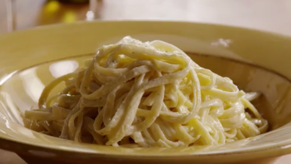

FettucineAlfredo

Description
Creamy and Cheesy Fettucine Alfredo
Ingredients
- 24 ounces dry fettuccine pasta
- 1 cup butter
- 3/4 pint heavy cream
- salt and pepper to taste
- 1 dash garlic salt
- 3/4 cup grated Romano cheese
- 1/2 cup grated Parmesan cheese
Directions
- Bring a large pot of lightly salted water to a boil. Add fettuccine and cook for 8 to 10 minutes or until al dente; drain.
- Melt butter into cream in a large saucepan over low heat; add salt, pepper, and garlic salt.
Increase the heat to medium; stir in grated Romano and Parmesan cheese until melted and sauce has thickened
- Add cooked pasta to sauce and toss until thoroughly coated; serve immediately.